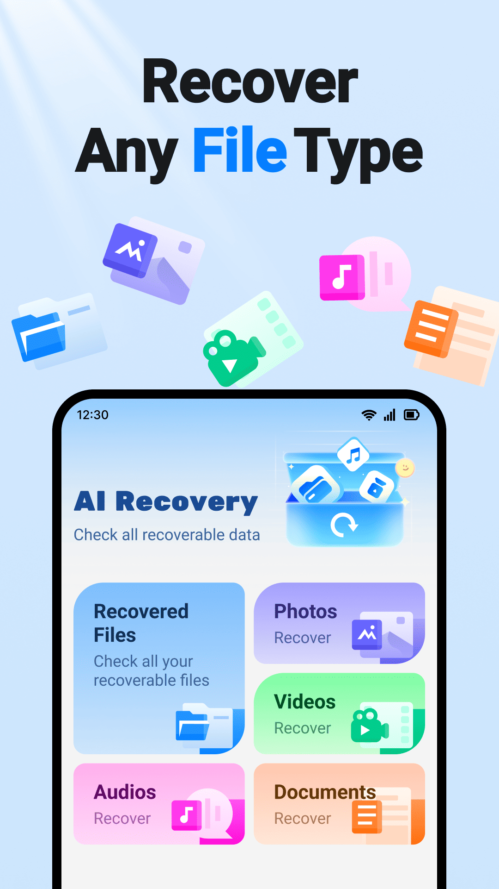
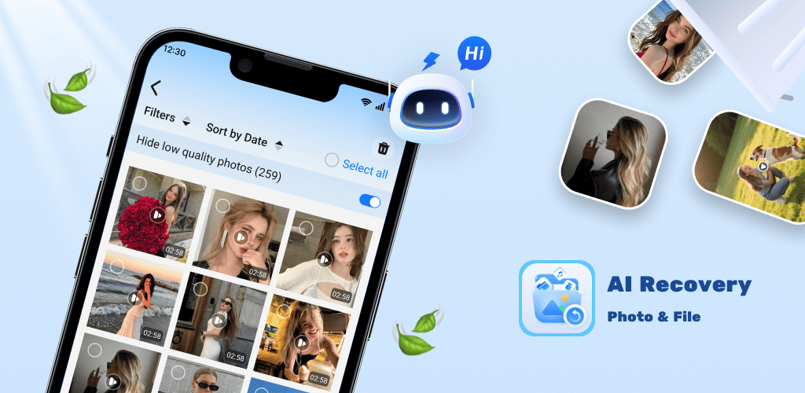
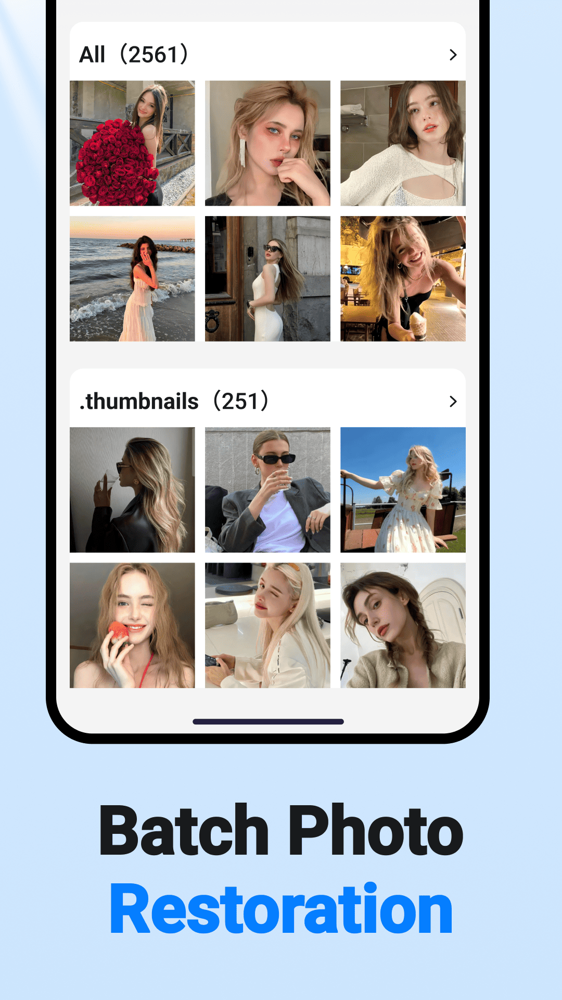
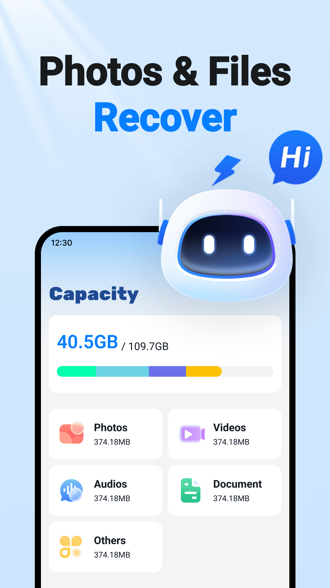
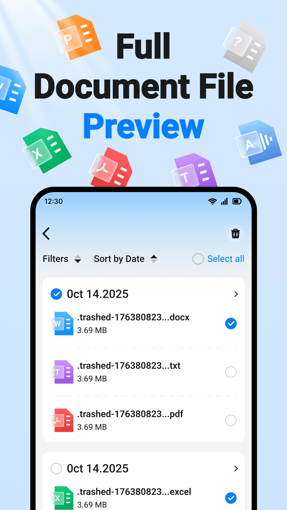

01
Full-device scan
One scan identifies photos, videos, audio, archives, and documents without missing a corner.
View the processAI-POWERED MOBILE RECOVERY
From deleted photos to hidden documents, AI Recovery scans the traces left on your device and helps your most important files find their way home.

PRODUCT CAPABILITIES
A reliable way home for every piece of content that matters on your phone.

One scan identifies photos, videos, audio, archives, and documents without missing a corner.
View the process
Smart grouping by album and date lets you preview and bring back a whole memory at once.
See every detail before recovery and keep only the files you actually need.
HOW IT WORKS
No complex setup and no technical knowledge required. Recovery feels as simple as finding a file.
Allow storage access and let AI find recoverable data.
Filter by type, date, and size before you choose.
Select a destination and save the complete result.


BUILT FOR REAL LIFE
From an emptied recycle bin to an accidental format, our recovery engine is tuned for the moments that happen in real life.
FAQ
Clear answers for a safer recovery experience.
No. AI Recovery uses read-only scanning. Recovered files are saved to a new location you choose, without modifying your originals.
Basic scanning works without root access. If a deeper scan needs extra permissions, the app explains what is required before you continue.
Photos, videos, audio, documents, archives, and other common formats are supported, with more added over time.
A quick scan usually takes a few minutes. Larger storage and more files can make a deep scan take longer.